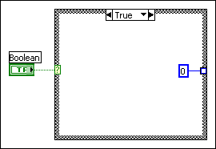

A Case structure on the block diagram has an output tunnel, but in at least one of the cases, no output value is wired to the tunnel. If you run this case, LabVIEW does not know what value to place in the output. LabVIEW indicates this error by leaving the center of the tunnel white. The unwired case might not be the case that is currently visible on the block diagram.
In LabVIEW object-oriented programming, this error might cause a wire to have a red background.
To correct this error, move to the case(s) that contain(s) the unwired output tunnel and wire an output to the tunnel. You also can configure the tunnels on a structure to wire the input and output tunnels automatically in unwired cases. When the output is properly wired in all cases, the output tunnel is a solid color.